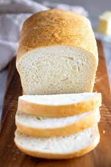

White Bread

Description
Savor the simple pleasure of homemade white bread. This classic recipe yields a soft, fluffy loaf with a golden crust.
Enjoy the irresistible aroma as it bakes, and relish the satisfaction of creating fresh, delicious bread from your own kitchen. Perfect for sandwiches, or as a side to your favorite meals.
Ingredients
- 1 cup warm water (about 110 degrees F)
- 3 tbsp white sugar
- 3 tbsp vegetable oil
- 1 1/2 tsp salt
- 3 cups bread flour (all-purpose works too)
- 2 1/4 tsp active dry yeast
Steps
- Place all liquids at the bottom of your bread machine.
- Add sugar, then salt, and finally the flour to the machine.
- Make a divot in the flour, and add the dry yeast, ensuring the yeast is only coming in contact with the flour.
- Using the "Basic Bread" or "White Bread" setting, cook the loaf with the medium size and medium crust color options.
- When machine is finished, immediately take out bread and allow to cool on cooling rack.
- Serve and enjoy!